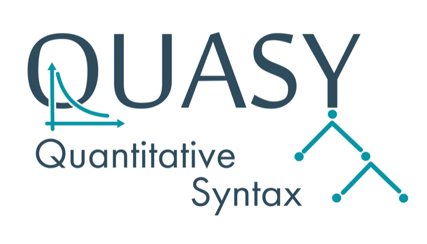

QUASY 2027
4th workshop · part of SyntaxFest 2027
August 30 – September 3, 2027, Prague, Czech Republic

International Workshop on Quantitative Syntax
QUASY is an international workshop series dedicated to quantitative approaches to syntax. It brings together researchers who study syntax with quantitative, statistical and computational methods grounded in empirical language data. Since its first edition in 2019, QUASY has been held as part of SyntaxFest, alongside related conferences and workshops on syntax, treebanks and parsing.
Corpora and treebanks are growing rapidly in (computational) linguistics, and statistical methods are increasingly popular in the linguistic community. Yet the potential of combining such structured data with statistical methods remains largely unexplored. QUASY responds to the need for meetings devoted to quantitative syntactic analysis and to theorizing based on empirical data. The workshop is held under the auspices of the International Quantitative Linguistics Association (IQLA).
4th workshop · part of SyntaxFest 2027
August 30 – September 3, 2027, Prague, Czech Republic
3rd workshop · part of SyntaxFest 2025
August 26–29, 2025, Ljubljana, Slovenia
2nd workshop · part of SyntaxFest 2021
March 21–25, 2022, online (hosted by Sofia, Bulgaria)
1st workshop · part of SyntaxFest 2019
August 26–30, 2019, Paris, France
Topics include, but are not limited to:
If you have any questions, please contact us at quansyntax@gmail.com.